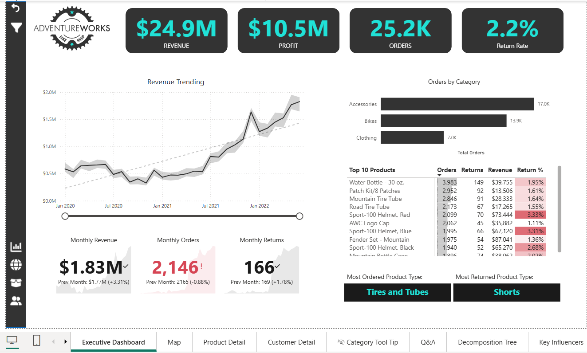
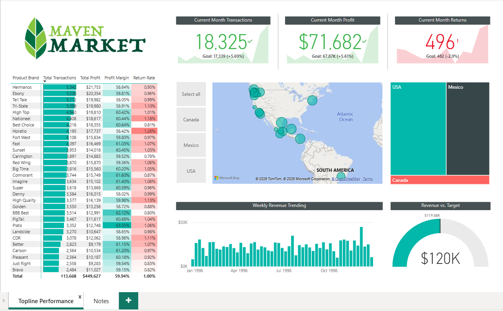
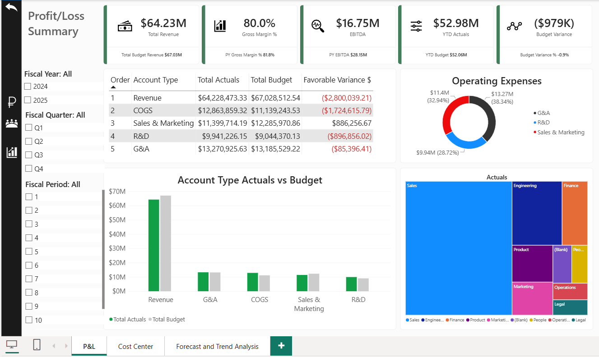
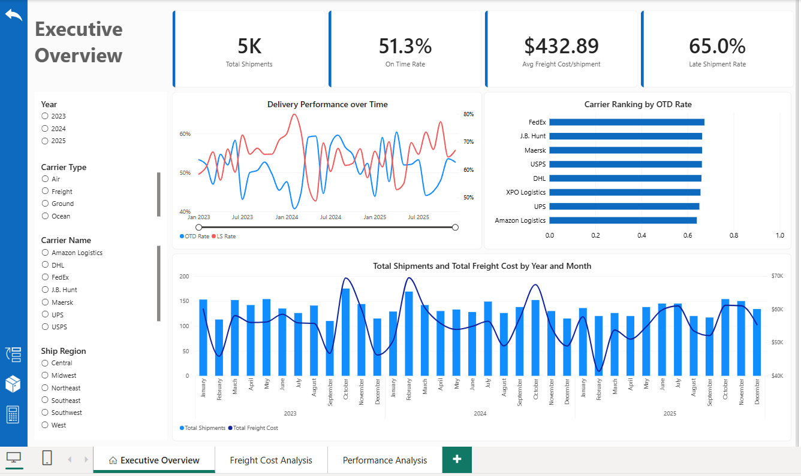
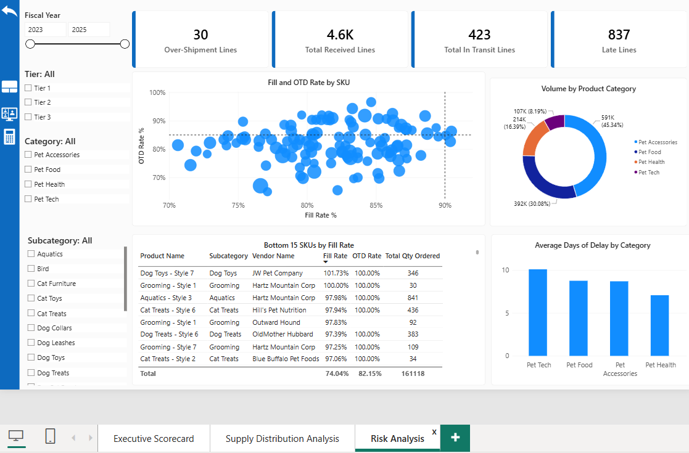

Power BI Projects
Work across Retail, FP&A, Supply Chain, Manufacturing, and Workforce Analytics
Adventure Works Sales & Customer Analytics
[Retail]

A full Power BI build on the Adventure Works retail dataset, worked through in five stages: cleaning in Power Query, building the model, writing the DAX, putting the visuals together, and finally letting Key Influencers and Decomposition Tree surface patterns on their own. I built it in stages on purpose so each layer had to hold up before the next one went on top of it.
The model is a star schema covering three years of sales alongside customer, product, territory, returns, and calendar dimensions. From there it answers the questions a retail team actually asks: where revenue and profit are coming from, which customers carry the most weight, what is getting returned, and how any of it compares to last year.
Maven Market Retail Analytics
[Retail]

A Power BI build on the Maven Market grocery dataset, covering two years of transactions across 1997 and 1998. The interesting wrinkle here is two separate fact tables feeding one star schema, joined out to store, product, customer, regional, returns, and calendar dimensions.
What it surfaces is the stuff a grocery chain runs on. How each store and region is performing, what customers keep coming back for, which categories are getting returned, and how any store stacks up against the rest of the chain year over year.
FP&A Analytics · Budget vs. Actuals & P&L Reporting
[FP&A]

A Power BI build supporting monthly business reviews, budget accountability, and full-year forecasting across three fiscal years. Budget and actuals live in separate fact tables here. They come in at different grain and refresh on different schedules, so forcing them into one table creates problems you end up unwinding later.
A sort order column on the accounts dimension keeps everything in proper income statement sequence, which sounds minor until a CFO opens a report and the lines are in the wrong order. There are three pages: an executive P&L view showing budget against actual variance, department budget tracking with drill-through, and a forecast page that projects the full year using actuals to date plus whatever budget is left.
Supply Chain Analytics · Fulfillment Performance
[Supply Chain]

Logistics and fulfillment analytics covering shipment tracking, freight costs, on-time delivery, and how carriers compare against each other. The model runs on two fact tables, roughly 5,000 shipments and 5,060 orders, joined out to four dimensions. The date table was built in Power Query across 2023 to 2025 and marked properly so time intelligence works the way it should.
Before any of that worked I had to deal with the data. Duplicate order line IDs, negative freight costs, fulfillment anomalies, and orphaned foreign keys all got handled and documented first. Then I added the columns that make the analysis possible: delivery days, an on-time flag, and freight cost per unit. Three pages came out of it, covering executive KPIs, freight cost broken down by carrier and lane, and delivery performance with drill-through.
Supply Chain Analytics · Salesforce Vendor Performance
[Supply Chain]

A vendor performance dashboard built from Salesforce CRM exports, pulling together four sources: PO line items, the vendor master, supply disruption cases, and products. This is the kind of build you end up doing when Salesforce is where the operational data actually lives.
The metric that matters here is the case-to-PO ratio. A vendor with a lot of disruption cases is not necessarily a problem if they are also handling a lot of volume, so measuring cases against purchase order count is what separates a genuinely risky vendor from a busy one. Getting there meant deduplicating records, flagging negative unit costs, documenting quantity anomalies, and standardizing vendor ID casing so the joins would hold.
Operations Analytics Platform
[Manufacturing]

Operations teams usually track quality and supply chain separately, which makes it hard to see how one affects the other. I built this platform to put both in the same place. It runs on a three-schema setup in PostgreSQL: raw holds the landing zone, core holds the cleaned views, and mart holds the pre-aggregated tables that Power BI actually connects to.
I profiled the data before transforming any of it. Duplicates, nulls, mixed values, and orphaned foreign keys all got documented and triaged first, because finding those later means rebuilding. The interesting part came out of joining the two domains: late deliveries from Tier 2 suppliers lined up with higher defect rates on the production lines downstream. That connection stays invisible if you keep the data in separate reports.
TA Conversion Report Investigation
[Workforce]
The Talent Acquisition dashboard started showing conversion rates dropping in a way that did not match what the recruiting team was seeing day to day. When the people doing the work tell you the number is wrong, that is usually worth listening to. I traced it back through the pipeline and found a sourcing categorization issue that was misattributing candidates and throwing off funnel metrics across the board.
Once that was corrected I rebuilt the dashboard using Power BI's Key Insights feature, which flags statistically notable weekly changes in conversion rates, volume, and funnel drop-off on its own. That changed the character of the weekly VP review. The analysis was already done by the time everyone sat down, so the meeting could be about decisions.
School Turnover Scorecard
[Workforce]
Staff turnover across the school network was being tracked in aggregate, which meant a school could be in serious trouble for months before anyone upstream noticed. I built a scorecard that broke turnover rates, tenure distributions, and exit patterns down to the individual school, then rolled them up to region and network views.
School leaders got a monthly snapshot showing where they stood against the rest of the network. HR could see which sites needed attention while there was still time to do something about it. The aggregate view had been hiding location-specific problems, and those problems needed different responses depending on the site.
Bonus Allocation Model
[Workforce]
Discretionary bonus allocations across a large employee population were being made without much consistent structure behind them. I built a model that applied objective criteria to the process, weighing performance metrics, tenure, and role classification, and put the results in a Power BI report managers could review and adjust inside defined parameters.
A process that had been manual and largely undocumented became auditable and repeatable. Allocation decisions held up when leadership questioned them, which was the real point. And for the first time there was visibility into how bonuses were distributing across departments and locations.